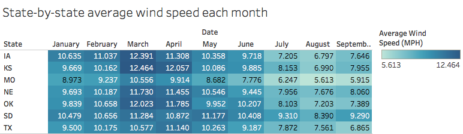
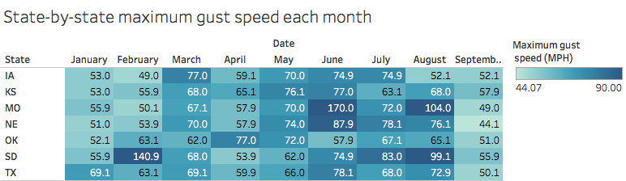
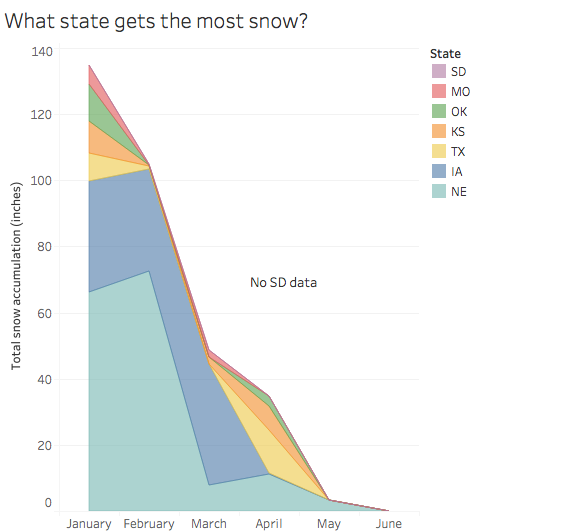

ENTER IMAGE CAPTION HERE.
Assignment 2: Exploratory Data Analysis
David Fleming — dflemin3@uw.edu
Dataset
ENTER A DESCRIPTION OF YOUR DATA SET HERE.
What is this data about? Who produced this dataset? Why are you interested in it?
The data is available online at: https://courses.cs.washington.edu/courses/cse512/18sp/data/weather.csv.gz
Initial Analysis Questions
- What can daily weather data reveal severe weather in the Midwest?
- Can one identify "Tornado Season" (roughly May to June) in "Tornado Alley" based off of daily wind speed and rain data??
- Which areas undergo the most extreme temperature differences from day-to-day? How is this correlated with snow, precipitation?
Discoveries & Insights


ENTER IMAGE CAPTION HERE.

ENTER IMAGE CAPTION HERE.

ENTER IMAGE CAPTION HERE.

ENTER IMAGE CAPTION HERE.

ENTER IMAGE CAPTION HERE.

ENTER IMAGE CAPTION HERE.

ENTER IMAGE CAPTION HERE.

ENTER IMAGE CAPTION HERE.
Summary
WRITE FINAL SUMMARY HERE.